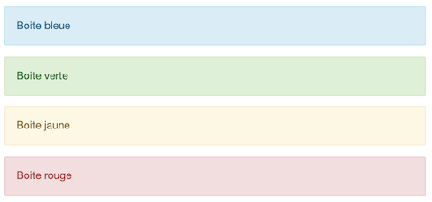

Mémo Markdown
Markdown a été créé par John Gruber en 2004. Markdown est conçu pour être aussi facile à lire et à écrire que possible. Il est aisément convertible en HTML.
Les fichiers Markdown possèdent l’extension .md. Markdown est également le langage des cellules de texte d'un notebook Jupyter.
Voici la plupart des éléments de la syntaxe Markdown et leur équivalent en HTML.
Titres
# Titre de niveau 1
## Titre de niveau 2
### Titre de niveau 3
#### Titre de niveau 4
##### Titre de niveau 5
###### Titre de niveau 6
<h1>Titre de niveau 1</h1>
<h2>Titre de niveau 2</h2>
<h3>Titre de niveau 3</h3>
<h4>Titre de niveau 4</h4>
<h5>Titre de niveau 5</h5>
<h6>Titre de niveau 6</h6>
Emphase
*Texte en italique*
**Texte en gras**
~~Texte barré~~
<p><em>Texte en italique</em></p>
<p><strong>Texte en gras</strong> </p>
<p><s>Texte barré</s></p>
Texte en italique
Texte en gras
Texte barré
Listes
Listes à puces
* Élément 1
* Élément 2
* Sous-élément 1
* Sous élément 2
* Élément 3
<ul>
<li>Élément 1</li>
<li>Élément 2
<ul>
<li>Sous-élément 1</li>
<li>Sous élément 2</li>
</ul>
</li>
<li>Élément 3</li>
</ul>
- Élément 1
- Élément 2
- Sous-élément 1
- Sous élément 2
- Élément 3
Listes ordonnées
1. Élément 1
2. Élément 2
1. Sous-élément 1
2. Sous élément 2
3. Élément 3
<ol>
<li>Élément 1</li>
<li>Élément 2
<ol>
<li>Sous-élément 1</li>
<li>Sous élément 2</li>
</ol>
</li>
<li>Élément 3</li>
</ol>
- Élément 1
- Élément 2
- Sous-élément 1
- Sous élément 2
- Élément 3
Remarque : la valeur numérique des entrées des éléments n'a pas d'importance :
1. Élément 1
1. Élément 2
4. Élément 3
- Élément 1
- Élément 2
- Élément 3
Listes à cocher
- [x] Élément 1, coché
- [ ] Élément 2, non-coché
- [x] Sous-élément 2.1, coché
- [ ] Sous-élément 2.2, non-coché
- [ ] Élément 3, non-coché
<ul>
<li>
<label>
<input type="checkbox" checked>
Élément 1, coché
</label>
</li>
<li>
<label>
<input type="checkbox">
Élément 2, non-coché
</label>
</li>
<ul>
<li>
<label>
<input type="checkbox" checked>
Sous-élément 2.1, coché
</label>
</li>
<li>
<label>
<input type="checkbox">
Sous-élément 2.2, non-coché
</label>
</li>
</ul>
<li>
<label>
<input type="checkbox">
Élément 3, non-coché
</label>
</li>
</ul>
- Élément 1, coché
- Élément 2, non-coché
- Sous-élément 2.1, coché
- Sous-élément 2.2, non-coché
- Élément 3, non-coché
Citations
> Voici une citation
> sur plusieurs lignes
<blockquote>
<p>Voici une citation</p>
<p>sur plusieurs lignes</p>
</blockquote>
Voici une citation
sur plusieurs lignes
Séparateurs horizontaux
---
ou *** ou ___
<hr/>
Liens
[Ceci est le texte du lien](https://www.carnets.info)
[Ceci est un lien avec un titre au survol](https://www.carnets.info "Le titre du lien")
Ceci est un lien automatique : https://www.carnets.info
On rencontre aussi cette syntaxe : <https://www.carnets.info>
<p><a href="https://www.carnets.info">Ceci est le texte du lien</a></p>
<p><a href="https://www.carnets.info" title="Le titre du lien">Ceci est un lien avec un titre au survol</a></p>
<p>Ceci est un lien automatique : <a href="https://www.carnets.info">https://www.carnets.info</a></p>
<p> On rencontre aussi cette syntaxe : <a href="https://www.carnets.info">https://www.carnets.info</a></p>
Ceci est un lien avec un titre au survol
Ceci est un lien automatique : https://www.carnets.info
On rencontre aussi cette syntaxe : https://www.carnets.info
Images
{width=30}
<img
src="https://github.com/adam-p/markdown-here/raw/master/src/common/images/icon48.png"
alt="logo Markdown"
title="Logo Markdown"
width=30
>

Tableaux
Titre colonne 1 (gauche) | Titre colonne 2 (centré) | Titre colonne 3 (droite)
:--- | :---: | ---:
Cellule 1.1 | Cellule 1.2 | Cellule 1.3
Cellule 2.1 | Cellule 2.2 | Cellule 2.3
<table>
<thead>
<tr>
<th>Titre colonne 1</th>
<th>Titre colonne 2</th>
<th>Titre colonne 3</th>
</tr>
</thead>
<tbody>
<tr>
<td>Cellule 1.1</td>
<td>Cellule 1.2</td>
<td>Cellule 1.3</td>
</tr>
<tr>
<td>Cellule 2.1</td>
<td>Cellule 2.2</td>
<td>Cellule 2.3</td>
</tr>
</tbody>
</table>
| Titre colonne 1 (gauche) | Titre colonne 2 (centré) | Titre colonne 3 (droite) |
|---|---|---|
| Cellule 1.1 | Cellule 1.2 | Cellule 1.3 |
| Cellule 2.1 | Cellule 2.2 | Cellule 2.3 |
Code
Code en ligne
insertion de code en ligne : `print("Hello World!")`
avec coloration syntaxique (MkDocs) : `#!py3 print("Hello World!)"
<p>insertion de code en ligne : <code>print("Hello World!")</code></p>
insertion de code en ligne :
print("Hello World!")
avec coloration syntaxique (MkDocs) :
print("Hello World!")
Bloc de code
```python
print("Hello World!")
```
<pre> print("Hello World!")</pre>
print("Hello World!")
Bloc de code avec titre
```python title="titre"
print("Hello World!")
```
print("Hello World!")
Boites colorées dans un notebook Jupyter
<div class = "alert alert-block alert-info"> Boite bleue</div>
<div class = "alert alert-block alert-success"> Boite verte</div>
<div class = "alert alert-block alert-warning"> Boite jaune</div>
<div class = "alert alert-block alert-danger"> Boite rouge</div>
Exemple de style personnalisé
<div class="alert alert-success" style="border-left: 10px solid #3c763d;border-radius:2px;"> </div>

Formules LaTeX
Mode en ligne :
On cherche les solutions de l'équation (E) : $x^2 + 3x -7 = 0$
Mode bloc (display) :
On trouve :
$$x = \frac{-3 \pm \sqrt{37}}{2}$$
Mode en ligne :
On cherche les solutions de l'équation (E) : \(x^2 + 3x -7 = 0\)
Mode bloc (display) :
On trouve :
Caractères spécifiques
Tirets
Il n'y a pas de balise Markdown spécifique pour réaliser des tirets cadratins ou demi-cadratins. On utilise des balises HTML pour créer ces tirets.
- tiret long ou tiret cadratin :
—
—
- tiret moyen ou tiret demi-cadratin
–
–
Touches clavier
++ctrl+alt+del++
<kbd>Ctrl</kbd>+<kbd>Alt</kbd>+<kbd>Del</kbd>
Ctrl+Alt+Del
Notes de bas de page
Voici une référence à une note de bas de page[^a].
Et une autre[^b].
On peut rappeler une même référence plusieurs fois[^b].
[^a]: Les notes de bas de page peuvent être **mises en forme**,
et sur plusieurs lignes.
[^b]: Autre note de bas de page.
Aperçu :
Voici une référence à une note de bas de page1.
Et une autre2.
On peut rappeler une même référence plusieurs fois2.